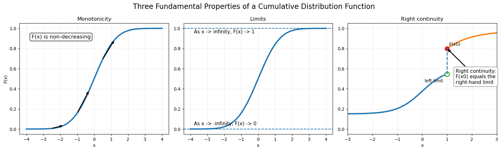

Show Python code
import numpy as np
import matplotlib.pyplot as plt
from scipy.stats import norm
x = np.linspace(-4, 4, 1000)
F = norm.cdf(x)
fig, axes = plt.subplots(1, 3, figsize=(16, 4.8))
# =====================================================
# (1) Monotonicity
# =====================================================
ax = axes[0]
ax.plot(x, F, linewidth=3)
ax.set_title("Monotonicity")
for x0 in [-2.5, -1, 0.5]:
ax.annotate(
"",
xy=(x0 + 0.7, norm.cdf(x0 + 0.7)),
xytext=(x0, norm.cdf(x0)),
arrowprops=dict(arrowstyle="->", lw=2)
)
ax.text(
-3.7,
0.9,
"F(x) is non-decreasing",
fontsize=12,
bbox=dict(boxstyle="round", fc="white")
)
ax.set_xlabel("x")
ax.set_ylabel("F(x)")
ax.set_ylim(-0.05, 1.05)
ax.grid(alpha=0.25)
# =====================================================
# (2) Limits
# =====================================================
ax = axes[1]
ax.plot(x, F, linewidth=3)
ax.axhline(0, linestyle="--", linewidth=1.5)
ax.axhline(1, linestyle="--", linewidth=1.5)
ax.text(-3.8, 0.04, "As x -> -infinity, F(x) -> 0", fontsize=11)
ax.text(-3.8, 0.95, "As x -> infinity, F(x) -> 1", fontsize=11)
ax.set_ylim(-0.05, 1.05)
ax.set_title("Limits")
ax.set_xlabel("x")
ax.grid(alpha=0.25)
# =====================================================
# (3) Right continuity
# =====================================================
ax = axes[2]
x0 = 1.0
x_left = np.linspace(-3, x0, 400, endpoint=False)
x_right = np.linspace(x0, 3, 400)
F_left = 0.15 + 0.45 / (1 + np.exp(-2 * x_left))
F_right = 0.80 + 0.18 * (1 - np.exp(-(x_right - x0)))
left_limit = F_left[-1]
right_value = F_right[0]
ax.plot(x_left, F_left, linewidth=3)
ax.plot(x_right, F_right, linewidth=3)
# Open circle: left limit
ax.plot(
x0,
left_limit,
marker="o",
markersize=10,
markerfacecolor="white",
markeredgewidth=2
)
# Filled circle: actual value F(x0)
ax.plot(
x0,
right_value,
marker="o",
markersize=10
)
# Jump line
ax.vlines(
x0,
left_limit,
right_value,
linestyle="--",
linewidth=2
)
ax.annotate(
"Right continuity:\nF(x0) equals the\nright-hand limit",
xy=(x0, right_value),
xytext=(1.35, 0.45),
fontsize=11,
arrowprops=dict(arrowstyle="->", lw=2),
bbox=dict(boxstyle="round,pad=0.4", fc="white", ec="gray")
)
ax.text(
x0 - 0.9,
left_limit - 0.08,
"left limit",
fontsize=10
)
ax.text(
x0 + 0.08,
right_value + 0.03,
"F(x0)",
fontsize=10
)
ax.set_ylim(-0.05, 1.05)
ax.set_xlim(-3, 3)
ax.set_title("Right continuity")
ax.set_xlabel("x")
ax.grid(alpha=0.25)
plt.suptitle(
"Three Fundamental Properties of a Cumulative Distribution Function",
fontsize=16
)
plt.tight_layout()
plt.show()